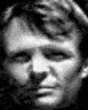
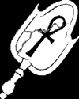
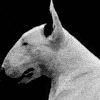

Kronika ¾ivota takøeèeného Jiøího Karáska Pra¾ského
prolog
*23.3.1977

Jiøí byl v¾dy velice spoleèenský a schopný. Jako dítì mìl v¹echno co si mohl pøát, ale nebyl rozmazlovaný. V¾dy se bál samoty,snad proto, ¾e jeho
pøedstavivost byla hodnì rozvinutìj¹í ne¾ by bylo bì¾né ujeho vrstevníkù.
Jeho hlavni zálibou byla v¾dy èetba. U¾ na základní ¹kole, èetl ponejvíce horory a cyberpunkové romány, pozdìji pøi studiu architektury, na Karlovì
Universitì se seznámil s knihovníkem, který jej navedl na okultní a
obskurní literaturu.
Spolu s ním, také zaèal hrát klasické fantasy RPG hry, kde zastával úlohu temného elfa, kouzelníka.
Chvíli se pokou¹el programovat, ale záhy zjistil, ¾e jeho cesta je prostì jinde.
Dìvèaty není pøíli¹ vyhledáván, snad kvùli své slo¾ité povaze, která jej jej nutí
vìnovat vìcem snad a¾ pøíli¹né zaujetí. Nebo kvùli vzhledu? Dobøe stavìné tìlo, to ano, ale neudr¾ované, mírnì obtloustlé, mastné vlasy, velká
spotøeba cigaret...
Architekturu dostudoval v roce 1995 s výborným
prospìchem, proèe¾ okam¾itì nastoupil na sociologická studia.
Kvùli výzkumné práci, týkající se populacní patologie v husté mìtské zástavbì, mu rodièe poøídili byt v Praze.
(A propos, rodièe. Mìl by se zanimi u¾ koneènì zastavit nebo zavolat,
alespon na vanoce...)
Tìsnì pøed "pøijetím" mu zaèalo docházet, ¾e v Praze se dìje nìco, co je¹tì nikdo z pøede¹lých sociologù nepopsal. Nìco co naru¹uje v¹echny zabìhaná sociální
schemata...................
sen první
Sen!?
..... byla krásná. Èernobílá, rozcuchaná taneènice v klubu Twilight..... jak se jmenovala? Jak jsme se dostali do jejího bytu? Ech, koho to
zajímá.
Milování? Sex? Láska? Opojení? Extáze?.....
.........................................................................................
bolest..bolest....bolEST.BOLESTBOLESTBOLEST .....køeè.køeè.køeè......................bolest.køeè ..................... Je
veèer? Noc? Ráno? V krku mám vyschnuto, musel .... musel jsem se hroznì opít. ®ízeò...ona? Sedí na podlaze s hlavou svì¹enou....kdo jsem? Mìsto, místo, rok, jméno?
Rok?
Její suchý smích ..............................bezvìdomí ........... probouzí mì hlad .... ona .... asi
máM hAlUcinaAce .... moje zuby jsou pevné a dlouhé, dost nato, aby v horeèném zápalu roztrlhly bílou ¹íji mladého chlapce s kruhy pod oèima ....
halcinace? Krev je slaná, tor¹ku nahoøklá chutí drogy...........
Tøesk odedveøí. Dva lidé, on a ona. On skoèí po mé èernobílé paní. Uhodil ji. Stra¹nì rychle a bezohlednì. Køièí na ni, a» mì zabije .... "Hned!"
Okno je záchrana... støepy na kù¾i jen hladí. Jeho ruka?
Ruka? Drápy? Halucinace?! Ta u¾ nehladí.... dr¾í
jako ocelový svìrák, tì¾ká jako kovadlina.
Køièím na nìj. Køièím str¹nì moc nahlas. Ne ldisky, ne zvíøecky. Nahlas. Mùj køik se podobá lavinì kamení padající ze skal, je v nìm strach a zloba, histerie,
hrozba....... bì¾ím, dlouho a rychle, svìt je se
rozmazává na modro-¹edé ¹mouhy.... koneènì,
lidé. Hlad.
Kam dál? Co je tohle za mìsto? Mìsto? Kam dál? Zahrady,
zahradní domek, okno...dal¹í støepy. Dal¹í
pohlazení.
Schoulit se do kouta a
omdlít.
Sen? Zacyklený? Zvuk
smíchu podobný støepùm
padajícím do napu¹tìné vany.......
první intermezzo

Probudil jsem se v cizím zahradním domku, horkem ne kù¾i.
Slunce. Pálí jako kyselina.
Na okno jsem hodil kabát a upadnul do bezvìdomí.
Zdálo se mi o Ní. Nemìla tváø, ¾ádné rty, ¾ádné oèi, jen høíva èerných vlasù, smyslné tìlo. Skláním, líbá mì...
probuzení...
sen druhý
Je veèer, hlasy v hlavì, jako kdy¾ sly¹í¹ v telefonu hovory ostatních. Kde je Ona? Kde jsem já?
Venku je tama, musím domù, nakrmit psa. Psa? Kde je domù?
V kapse zazvoní telefon. "KNIHOVNIK.UK"
"Jo?"
"Ahoj Jirko, pøijde¹ dneska veèer na tu studentskou párty?"
"Aha...?"
"Ty u¾ jsi koukám pil, co?"
"No vlastnì, mám problém, potøeboval bych se dostat domù, ale... ví¹ co, sejdem se nìkde. Navrhni místo.
Nevím kde jsem..."
"Hmm, dobøe, sedni na nìjakej dopravní prostøedek a dostaò se na
Hlavní nádra¾í, to najde¹ i poslepu. Potkáme se u okýnka è.5. Má¹ to?"
"Jasnì, hlavní nádra¾í, u pìtky...pozná¹
mì, ¾e."
"Jo, ...ty musí¹ bejt asi dost mimo. Tak za hodinu?"
"Jo."
Hodina cesty tím ¹íleným mìstem, jako fe»ák na dojezdu, ¾ádná enerie, studené jehlièky za krkem, jen pot nikde. Chtìl jsem si koupit jídlo, ale muslel jsem jej vyhodit. Hnusná kocovina.
Hlavní nádra¾í.
Spousta lidí...posedávají u svých igelitových ta¹ek, odpadkù. Posmrkávají.
Uhýbají oèima policajtùm.
Vím jak se vìci jmenují, kdy¾ je mám pøed oèima, záblesky pamìti mi vracejí èásti jejich úèelù. Nìkteré vìci nedoká¾u pojmenovat,
nìkteré jménem znám, ale nevím k èemu jsou. Jak mù¾e èlovìk zapomenout tolik vìcí?
Na nádra¾í pí¹ou Praha.
Koupím si plán mìsta a u okýnka è.5 jej
rozkládám.
Chyba! Je jich nìkolik, jeden chce oheò, ona mi ¹ahá na rameno. Dal¹í nìco blábolí.
®duchnutí... pád... kopanec od oblièeje, dal¹í do bøicha.... Vyra¾ený dech.
V¹echno ¹lo rychle.
U¾ zase sedím u okýnka è.5. Jen v kalhotách a triku, bez støíbrných prstenù a pøívìsku ANKH, telefonu, mapy, kabátu, dokladù na jméno Jiøí Karásek, visa karty,...
Èekám je¹tì asi 5 minut a najednou si uvìdomuji, ¾e mám
stále vyra¾ený dech. Já nedýchám? Já kurva vùbec nedýchám, tep, tep, nemám
tep. Mramor nestudí. Sklenìná plocha ukazuje zsinalou tváø a modøinu na krku. Jsme to já? Chodím, mluvím, "Mluvím?", mluvím, nedýchám,
srdce mi netluèe.
Hlasy v mé hlavì...
nahrazují ¹um krve a pravidelné zvuky tìla. Stále se opakující, monotónní ¹eptání, bublání, ¾vatlání.
"Jiøí? Jiøí?! Co je to s tebou? Proè jsi proboha tak bledej? Kde má¹ kabát? V¾dy» venku je pìt nad nulou. Sly¹í¹ mì vùbec?!!"
"Ale jo, sly¹ím," nápad.
"To je právì ten problém, nìkdo mì dostal a okrad. Dostal jsem pár kopaèek
a nevím. Nevím kde bydlím, a¾ tady jsem zjistil, ¾e jsem v Praze, nemám nic, a co húø, nevím kdo jsem. Pamatuje¹ si kde bydlím?"
"Jasnì, voe, ¹ak jsme se spolu nìco nakalili. Jedem! Vím dokonece, kde má¹ náhradní klíèe."
Doma je lou¾ièka a ORK, mùj bulteriér, se netváøí zrovna ¹»astnì.
Obleèu se, skøíò je plná hader, v¹echny témìø stejné, èerná, bílá. Kravata?
Uvázal jsem si ji automaticky. V zrcadle zase vidím sám sebe. Skoro. Chybí støíbro, na prstech i na krku. Hlasy v hlavì zesilují, jak se zrychluje tep mého
mrtvého(?) srdce.
Jdeme se projít se psem a povídáme si o minulosti.
U¾ vím, ¾e jsem byl studentem, ale ze studií si
nepamatuji jedinou stránku textu.
On je knihovník na universitì, Matou¹ Havran. Známe se dlouho a jsme pøátelé.
Okolo pùlnoci odchází na studentskou pitku, chvíli jdu spolu s ním, a on mi ukazuje Prahu, na malé stranì se vymluvím, ¾e mi není dobøe.
Franz Kafka, obraz drobné knihy o procházce. Popis jednoho zápasu?
Pocit osamìní i kdy¾ Matou¹ stále mluví...
"Dostane¹ se domù?"
"Ale jo, jen... chvilku si tady sednu a poroberu si to v hlavì,
myslím, ¾e jsem to tu mìl rád, kdysi, tøeba to pomù¾e."
"Ech nemyslím, kampa v noci není zrovna milé místo..."
"Jdi, prosím..."
Odchází.
Zaèínám mít hlad. Hlad,
kteý stáèí mùj pohled na hrdlo mladé
zmalované "studentky", která na lavièce ob¹»astòuje
nìjakého mladíka. Pøiblí¾ím se ve
stínu.
U¾ vím co jsem,
právì mi to do¹lo a hlasy v mé
hlavì souhlasnì vykøikly.
Zuby, jasnì mám je, jak v
nìjakém béèku.
KOUSNUTÍ je sladké.
Cítím vùni
jejího pohlaví, pod jeho rukou, ale hrdlo, je
krásnìj¹í, nì¾nìj¹í, slad¹í, ne¾ cokoli
jiného na svìtì. Je to Ona, èerá høíva,
smyslné tìlo. Miluji se s její krví, jazykem,
tváøí, prsty, hladím a roztírám
sladko-slané kapky ... vyru¹í mì jeho køik. Není
to Ona, stále mu je¹tì sedí na klínì. On je tu
tøetí a zdá se ¾e si to plnì uvìdomuje. Hledíme si
do oèí, já ústa od krve, on ruku na jejím
pohlaví i ona je od krve....
Utíkám a nahlas se
smìju, smìju se jako puber»ák
po první soulo¾i, ale narozdíl od nìj jsem plný
sil.
Rozbìhnu se a zastavím se
a¾ doma na ®i¾kovì.

druhé intermezzo
Vzbouzím se v pìt
veèer. Mìl jsem divný sen, zdálo
se mi, ¾e jsem upírem a piji krev. Zdálo se mi o bìhu
ulicemi. O hlasech. O tom, ¾e nedýdchám. Hloupost.
Dýchám. Zasmìju se, ale smích zní tro¹ku
histericky. Ve snu byla Ona. Jak jen se jemenuje?
Uvaøím si kávu, ne¾
vychladne, skoèím dolù do
trafiky. Povykládám si s paní prodavaèkou,
zajímavé, ¾e nevím, jaké cigarety
kouøím. Ona to ví.
Jdu domù, káva u¾ je
studená. Já taky, zase
nedýchám... hlasy v hlavì jako ve snu... zase jsem usnul?
Probouzím se
leknutím, na retch cítím
Její rù¾.
tøetí sen
Hledám Ji. Jdu do
Jejího bytu. Hlasy v hlavì
nemluví, mlèí. Dveøe sklepního bytu jsou
zamèené a nepo¹kozené. Dùm spí. Jak by ne, kdy¾ je
okolo tøetí ráno. I ulice je vyprázdnìná,
jen z klubu odnaproti se je¹tì ozývá ponurá hudba.
"Smrt není konec... pamatuj smrt není konec..."
zpívá chraplavý hlas.
"Jo, má¹ pravdu hajzle, to má¹ sakra pravdu", vytrhávám jednu
desku, ze zatluèeného okna, podruhé.
Rozsvítím a zaènu
nasávat její vùni. Je
jí tam jenom zbytek, hledám soustøedím se. Svìt se
mení v barvy, a vùnì. Chvilku jsem zmatený, chvilku
sly¹ím a vidím moc ostøe, cítím
výstupky na povrchu jednoho sklenìného støepu,
který hladím. V¹ímám si otiskù jejich prstù
na zrcadle, jejich? Najdu pudr, ¹minky, a nejdøíve napudruji
svou ple», témìø a¾ na svìtle hnìdo. Potom zracadlo, tam kde si
pamatuji její otisky. Zanesu je na patologii Tereze.
Aha, Tereza Èerná z
patologie.
Prohledám zbytek bytu.
Její ¹aty, její
parfém, obrázek, s melencholickým a¾
kýèovitým obrázkem, zapadajícího
slunce. Chápu tu nostalgii. Pár kní¾ek o
psychologii, spí¹e odborné, ne¾ populární.
®ádné podtrhnuté øádky.
®ádné ¹perky.
Peníze, asi pìt tisícovek v
drobných bankovkách. Nic nenapovídá,
kým byla a kdo byl její nepøítel.
Doma.
Sestavým z jejich
vìcí totem, èi spí¹e
oltáø. Její tváø, neznám, nìkolik
náèrtkù fixem na zeï, ani jeden není ona. ©krtám,
zkou¹ím znovu, pak rtìnkou... ne, ne, ne... pláèu
obleèený do jejích ¹atù.
Jdu vyvenèit psa a zkou¹ím
své nové schopnosti,
vnímám vùni jeho ko¾ichu, hladím jeho pichlavou
srst, a¾ mi to zpùsobuje bolest. Sleduji, co dìlají jeho
barevné stíny, kdy¾ jej provokuji klackem.
Jdu lovit, na Kampu? Do parku.
Snadné místo. Je hodnì
brzo ráno, dlouho nikdo nejde. Nakonec malý chlapec.
Malý chlapec v pìt ráno? Není malý,
spí¹ mladý, pod nosem náznak knírku.
Voní sexem.
"Nemá¹ oheò?"
Lekne se, kdy¾ vystoupím
ze stínu.
"Dej si cigáro...,
jaká byla?"
Úsmìv se mu vrací
do tváøe i kdy¾ je mu oèividnì
zima. Bere si cigáro a chvilka, kdy se nesoustøedí je
právì ta, která staèí mì, abych se nakrmil. Bez
elegance, rychle a brutálnì.
"To je on, to je kurva, ten
hajzl!!"
Instinktivnì otáèím
hlavu a koutkem oka, zahlédnu
floutka, znám jej, to on byl pod samicí co jsem jí
vèera otevøel hrdlo. Ztráta panictví!!
Pou¹tím mladíèka,
který dnes mo¾ná za¾il
taky svoje poprvé a s koèím do køový.
Nejsem nasycen. Co u¾.
Jejich barva, je barva zloby. On
a velký holohlavý chlap
s no¾em. Nadávají, hledají mì. Krèím se v
køový a hlasy v mé hlavì znovu ¾vatlají.
Bojím se, abych nemluvil nahlas, zakousnu se do vlastní
ruky a èekám.
Nakonec odcházejí,
mladíka v bezvìdomí
berou ssebou.
Musím za Terezou.
Nevím odkud jí
znám, ale vím, ¾e pracuje na
patologii. Dovnitø se dá dostat oknem ve skladì, odkud to
vím?
Rozhovor je krátký,
Tereza je jako v¾dy
nepøíjemná, já se bojím, proto¾e najednou
vím, ¾e je to ta ¾ena, která s neznámým
zaútoèila na mou paní. Nevím jestli ona
ví...
... nejsem obratný
øeèník, kdy¾ mám strach. Je
klidná a uzavøená.
Ano ví, mluví o
mém novém já,
zná to. I ona nedýchá. Lékaøka mi
vysvìtluje, pár vìcí, které se mi mù¾ou hodit. Ale
stejnì jako já neví proè. Stejnì jako já
neví, kde je ON a ONA. Pokraèuje v pitvì. Odcházím.
Úsvit mì ¾ene domù
rychleji, ne¾ bych chtìl a prohlubuje tak mùj
hlad. Usínám vyèerpaný.
Poor little ghost boy, let me be your human toy.
12.2.2004 1:11:45